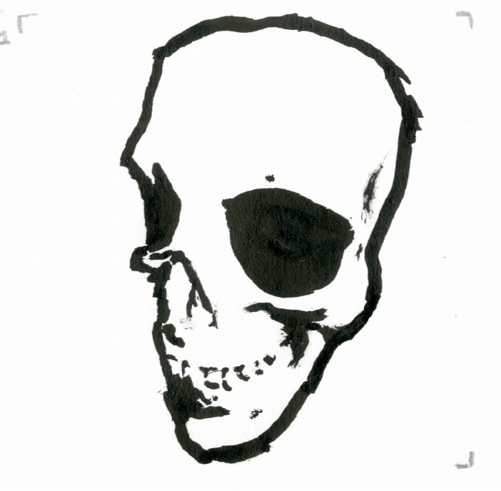
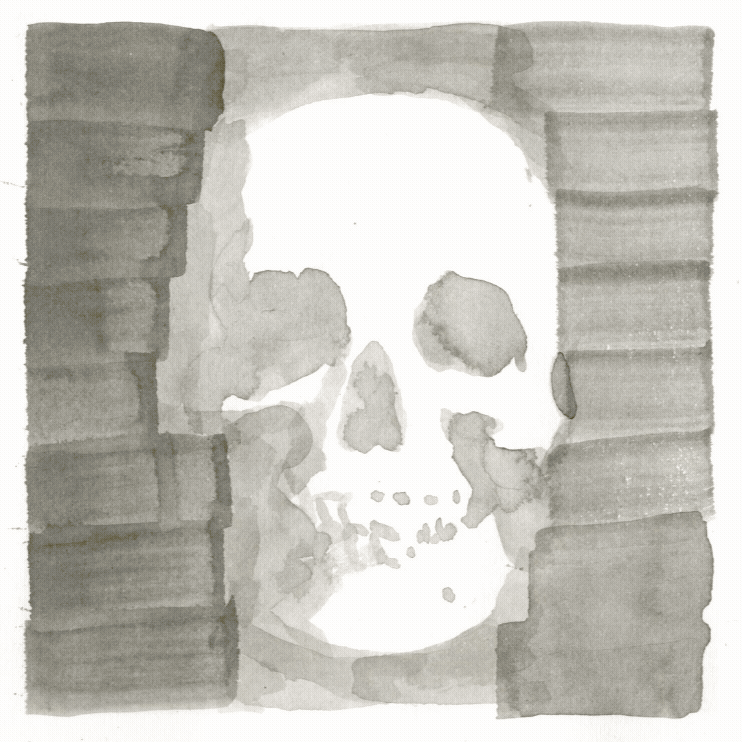

animations of skulls, originally rendered in 3D, then painted with ink. The craniums are portrayed with various movements to capture how the point light interacts with their forms.
These harsh shapes are then interpreted through two different mediums. Two of these were painted with ink by hand, frame by frame. The last one had each frame turned into vectors, which were used to make large lazercut stencils. Spray paint was then applied to these stencils, revealing the final form of the skulls movements.
Cranial warping in ink.

Cranial rotation in ink.

Cranial movement in spray paint.
process explanation